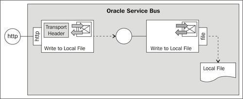
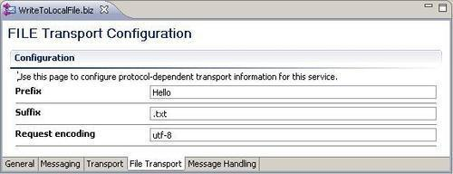
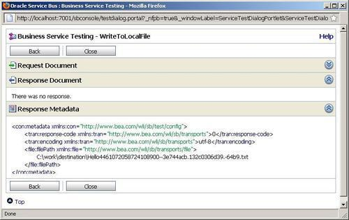
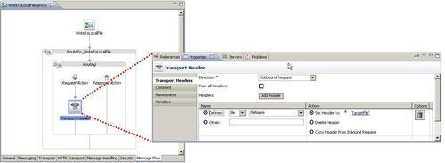
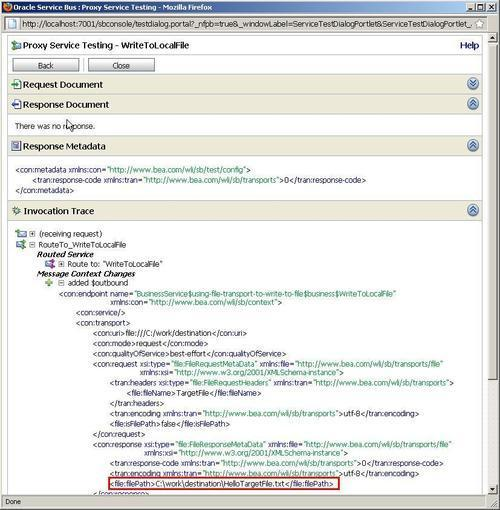
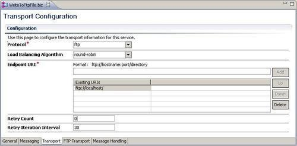
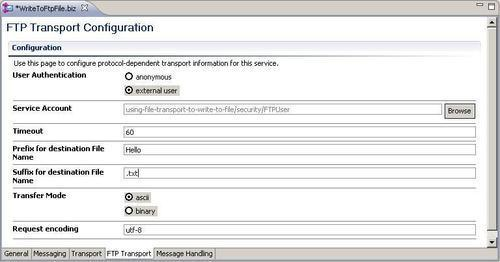

In this recipe, we will write a file to the local filesystem (local to the OSB server). We will implement a business service which uses the File Transport to do that. Additionally, we will create a proxy service and control the filename of the file being written by using a Transport Header action.

We begin with a business service writing a file to a local folder. In Eclipse OEPE, perform the following steps:
using-file-transport-to-write-to-file. business folder in that new project. business folder create a new business service named WriteToLocalFile. file:///C:/work/destination into the Endpoint URI field and click Add. Hello into the Prefix field and .txt into the Suffix field.
The business service to write a file is now configured and we can test it through the test console. In the Service Bus console, perform the following steps:
Hello world! For the content to write to the local file into the Payload field.
We have a business service through which we can write to a local file. The filename is generated. We can only control the prefix and suffix being used through the configuration of the File Transport.
To specify the complete filename, a Transport Header action can be used in the Routing action of the proxy service which is invoking the business service.
Simply using a business service configured with the File Transport is enough to be able to write a file to a local folder. The Endpoint URI configured on the File Transport defines where that target local folder resides. If the folder does not yet exist, then it is created by the File Transport upon writing the first file.
The File Transport allows some control over the filename by the prefix and suffix option. However, the middle part of the filename is by default generated based on a UUID-like string. By that it's guaranteed that the filenames are always unique. If this is not the behavior we want, then we can overwrite the filename by using a Transport Header action, as shown in the next recipe Specifying a filename at runtime.
If a file already exists, a _N will be appended, where N is a number starting from 0. The string will be added before the suffix, so an original filename targetFile.txt would be extended to targetFile_0.txt, if targetFile.xml already exists in the destination folder.
In this section, we discuss how to specify the filename dynamically at runtime and how to use the FTP Transport to write a file to a remote folder through FTP.
If we want to overwrite the filename generated by the File Transport, then we have set some transport headers using a Transport Header action when invoking the business service from a proxy service.
So let's create a proxy service which invokes the business service created previously. To simplify things, we just use the Generate Service functionality to create a proxy service based on the existing business service and change the protocol to HTTP transport. In Eclipse OEPE, perform the following steps:
proxy folder. proxy folder in the Enter or select the parent folder tree, enter WriteToLocalFile into the File name field and click Finish.'TargetFile' (including the quotes) into the Expression field.
We can now test the proxy service through the test console. In the Service Bus console, perform the following steps:
proxy folder. Hello world! For the content to write to the local file into the Payload field.
Similar to shown in the Using the File or FTP Transport to trigger a proxy service upon arrival of a new file recipe, we can replace the File Transport by a FTP Transport to write to a remote filesystem through FTP.
To write the file to an FTP server, perform the following steps in Eclipse OEPE:
FTPUser.sa in the same way as shown in the Using the File or FTP Transport to trigger a proxy service upon arrival of a new file recipe. WriteToFtpFile in the business folder. ftp://localhost/ into the Endpoint URI field and click Add.
Hello into the Prefix for destination File Name and .txt into the Suffix for destination File Name field.
This business service can now be invoked from the proxy service instead and the file is written to the FTP server.